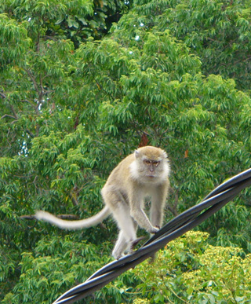

February 28, 2006
Hi from Lumut,
Lumut, Malaysia is two hours south of Penang, and 5 hours north of Kuala Lumpur if you try to find it on a map. This place provides ferry service to Pangkor island, the real attraction.
Spent four days on Pangkor, one day suited up for a snorkeling swim around the island of Giam. The water was somewhat cloudy, so coral sighting was nothing to talk about. However, excitement was lurking around the corner. In one of 3 small coves, fish by the hundreds came out to greet me. most colors of the rainbow were represented while size ranged to 16 inches. Then, when swimming in open water due to an extensive rock outcropping, it happened. As I lifted my head out of the water to check my route around the island, I met a 2+ yard (2 meter) monitor lizard, just over a yard in front of me. We startled each other, and I'm not sure who retreated faster, but we never met again. Even though it happened so fast, the one second experience will last a lifetime. After all, they are related to the Komodo dragons, and one bite from one of those monsters and you'd better have your last will and testament up-to-date!
That's not the only thing to see on Pangkor. Saw several Sea Eagles, and was able to get a photo of one sitting by his nest in a very tall dead tree. There is also a huge colony of black and white hornbills, more common than crows. Residents and tourists alike gather in the evening to toss bits of bread in the air for the hornbills to catch. About two dozen lined the power lines on the small street leading to my guest house as I headed out to dinner my last evening on the island.
One of the chalet owners, Noordin bin Bakar, is an amateur bird watcher. Each evening he calls and feeds the black and white's while keeping an eye on two distant trees where occasionally a great Hornbill would come to roost. Unfortunately, it did not make an appearance during my visit. Maybe next time.
The island boasts a waterfall with year-around flow, and the usual quantity of monkeys to hassle you for food if you are carrying a plastic bag.
I stayed at the Seagull Beach Resort where the owner and I hit it off. Edward Oh's from Malaysia, but lived in England for a time. Eight years ago he bought this resort as a retirement job. Formerly he ran oil palm and rubber tree plantations, so has a wealth of knowledge on those subjects. He was born in that great year, 1941. Edward speaks 5 languages, but not Mandarin. This was a source of embarrassment when asked 'Why Not?' on a trip to Hong Kong several years back. I tried to encourage him to visit China anyway, and not to worry about the language, because not many Chinese can speak 5 languages as well as he.
The third day was pretty windy, so after walking the island in the morning, the afternoon was spent teaching Edward how to do various things on his nice new laptop. In return, I got to use his WiFi, and uploaded some stuff to Trav-E-Log.
Back at the bus station in Lumut, a sign advertises the departure times for overnight buses to Terengganu, which will put me close to the Perhentian islands. Still want to find the spot I visited in 1993.

Bill